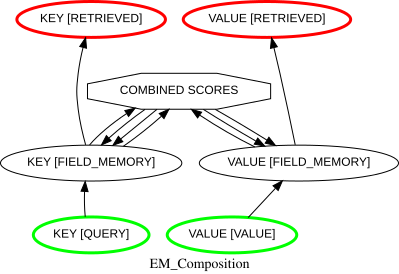
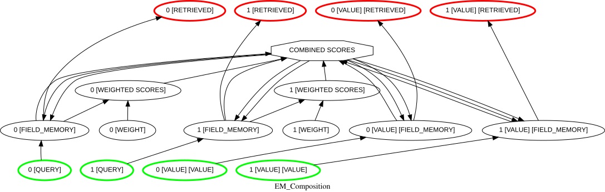
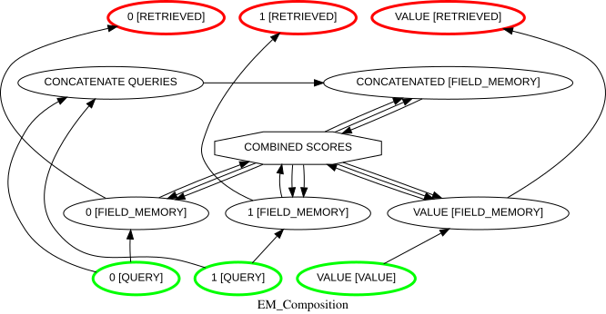

EMComposition¶
Contents¶
Overview¶
EMComposition implements a configurable, content-addressable form of episodic (or external) memory. It is a subclass of AutodiffComposition, which allows it to backpropagate error signals and learn how to differentially weight cues (queries) used for retrieval. It uses ExternalMemoryMechanism to manage field-specific memory matrices. EMComposition supports one or more memory fields, which can be configured as keys or values. Keys are used to score the similarity of queries to keys stored in memory, while values are retrieved but not used for similarity scoring.
It also allows several other factors to be configured, including the function used for evaluating the similarity of
queries to keys (“scoring”), the gain of the SoftMax function used to normalize the scores for each memory field,
whether the gain is adapted to the number of entries in memory, and whether the memory is
decayed by a specified amount after each storage. In many of these respects, it implements a variant of a Modern
Hopfield Network (in which storage of entries in the memory
matrix corresponds to fast learning of weights in the weights of a densely recurrent network), as well as important
features of a Transformer (in which
the softmax-weight simiarly based retrieval process implements a form of attention).
EMComposition emulates an EpisodicMemoryMechanism – reproducing all of the functionality of its
ContentAddressableMemory Function – in the form of an AutodiffComposition, which allows it to
backpropagate error signals based on retrieved values to it inputs, and learn how to differentially
weight cues (queries) used for retrieval. It also adds the capability for memory_decay.
Organization
Fields and Entries. The memory of an EMComposition is organized into fields), that are used to represent different pieces of information that are stored and
retrieved together as an entry in the EMComposition’s memory. Each field receives its own input (query or value), generates its own output
(retrieved value), and its memory is managed by
its own ExternalMemoryMechanism. Fields are divided into two types:
key fields: receive a query vector as input on each trial, the similarity of which is computed against each entry in
memorythat is used to determine retrieval; an EMCcomposition must have at least one key field, and can have as many as desired.
- value fields: recieve a value vector as input on each trial, that is stored and retrieved from memory, but not used
to determine retrieval; an EMComposition does not require an value fields, but can have as many as desired.
The EMComposition coordinates the storage and retrieval of entries across fields. Key fields and values fields, and
the contribution of each key field to retrieval, can be configured using field_weights.
The EMComposition’s full memory can be accessed using its memory attribute, which returns a
3d array, the rows of which (axis 0) are each entry, the columns of which (axis 1) are the fields of each entry, and
the items of which (axis 2) are the values of the entries for each field. The EMComposition’s fields are listed in its
fields attribute, and its The memory for a given field can be accessed via the
em.fields[ attribute.
Operation
When an EMComposition is executed, each key field computes the similarity of its input (query) to all of the
values for each entry in its memory, and the set of similarity scores are combined across all key fields to
generate a set of “combined scores” over all entries in memory, which is then used by each field to generate a
retrieved vector for each field (for both key and value fields). The input to each field is then stored in the
memory for that field (again, for both key and value fields). By default, this occurs by replacing the value in each
field that belongs to the entry with the weakest value across all fields. However, this behavior can be modified
using the memory_decay_rate and scores_metric
Parameters. The retrieved values for each field are returned as the result of the EMComposition’s execution,
and can be accessed using its results or its output_values
attributes. During learning, the EMComposition can adjust the field_weights to
optimize performance, and the error gradient can be passed through the composition to adjust the weights of the
fields that contribute to retrieval, as well as to any input nodes that project to the EMComposition. The full
sequence of operations carried out is describe in detail under Execution.
Creation¶
An EMComposition is created by calling its constructor. There are four major elements that can be configured: the structure of its memory; the characteristics of its fields; how storage and retrieval operate; and whether and how learning is carried out.
Memory Structure Specification¶
The memory of an EMComposition is comprised of fields and entries. The number of fields, the “width” of each, and the total number of
entries are specified using three arguments of the EMComposition’s constructor: memory_template, that
specifies the overall structure of its memory (the number of fields in each entry,
the width of each field, and the number of entries); memory_fill, that specifies initial values to assign
to each entry; and memory_capacity, that can be used to specify the total number of entries that can be
stored in the EMComposition’s memory. These are described in detail below.
memory_Template: this specifies the shape of the entries to be stored in the EMComposition’s
memory, and can be used to initialize it with pre-specified entries. The memory_template argument can be specified in one of three ways (see Examples for representative use cases):tuple: interpreted as an np.array shape specification, that must be of length 2 or 3. If it is a 3-item tuple, then the first item specifies the number of entries in memory, the 2nd the number of fields in each entry, and the 3rd the length of each field (note that in this case, all the fields will be the same leingth). If it is a 2-item tuple, this specifies the shape of an entry, and the number of entries is specified by memory_capacity). All entries are filled with zeros or the value specified by memory_fill.
Warning
If memory_template is specified with a 3-item tuple and memory_capacity is also specified with a value that does not match the first item of memory_template, an error is generated indicating the conflict in the number of entries specified.
Hint
To specify a single field, a list or array must be used (see below), as a 2-item tuple is interpreted as specifying the shape of an entry, and so it can’t be used to specify the number of entries each of which has a single field.
2d list or array: interpreted as a template for a memory entry. This can be used to specify fields of different lengths (i.e., entries that are ragged arrays), with each item in the list (axis 0 of the array) used to specify the length of the corresponding field. The template is then used to initialze all entries in
memory. If the template includes any non-zero elements, then the array is replicated for all entries inmemory; otherwise, they are filled with either zeros or the value specified in memory_fill.Hint
To specify a single entry, with all other entries filled with zeros or the value specified in memory_fill, use a 3d array as described below.
3d list or array: used to initialize
memorydirectly with the entries specified in the outer dimension (axis 0) of the list or array. If memory_capacity is not specified, then it is set to the number of entries in the list or array. If memory_capacity is specified, then the number of entries specified in memory_template must be less than or equal to memory_capacity. if is less than memory_capacity, then the remaining entries inmemoryare filled with zeros or the value specified in memory_fill (see below); if all of the entries specified contain only zeros, and memory_fill is specified, then the matrix is filled with the value specified in memory_fill; otherwise, zeros are used to fill all entries.
memory_fill: specifies the value used to fill the
memory, based on the shape specified in the memory_template (see above). The value can be a scalar, or a tuple to specify an interval over which to draw uniformly distributed random values to fillmemory— both should be scalars, with the first specifying the lower bound and the second the upper bound. If memory_fill is not specified, and no entries are specified in memory_template, thenmemoryis filled with zeros.Hint
If memory is initialized with all zeros and normalize_memories set to
True(see below) then a numpy.linalg warning is issued about divide by zero. This can be ignored, as it does not affect the results of execution, but it can be averted by specifying memory_fill to use small random values (e.g.,memory_fill=(0,.001)).
memory_capacity: specifies the number of entries that can be stored in the EMComposition’s memory; when
memory_capacityis reached, each new entry overwrites an existing one. By default, this is the weakest entry (i.e., the one with the smallest norm across all of its fields); however different behaviors can be configured (see memory_decay_rate). If memory_template is specified as a 3-item tuple or 3d list or array (see above), then that is used to determinememory_capacity(if it is specified and conflicts with either of those an error is generated). Otherwise, it can be specified using a numerical value, with a default of 1000.Warning
The
memory_capacityof an EMComposition cannot be modified after construction.
Field Characteristics¶
While the number of fields is specified using the arguments described above, the characteristics of each field (e.g., whether it is treated as key or value field, how key fields are weighted for retrieval, and how they are invovled in learning) are specified using either the fields argument of the EMComposition’s constructor, or a combination of the field_names, field_weights, learn_field_weights and target_fields arguments, as described below.
fields: a dict that specifies the names of the fields and their attributes. There must be one entry for each field specified in the memory_template, formatted as {<str: dict or tuple>}, where:
str: a string that specifies the name of the field.
dict or tuple: either of which must have three entries; if a dict, the key to each entry must be the keyword specified below or, if a tuple, the entries must appear in the following order:
FIELD_WEIGHT specification - value must be numeric or
None. If it is numeric, the field is treated as a key field, that is weighted by that value during retrieval; ifNone, it is treated as a value field <_EMComposition_Values>` and it cannot be reconfigured later (see fields_weights for additional information).LEARN_FIELD_WEIGHT specification - value must be a boolean or a float; if
False, the field_weight for that field is not learned; ifTrue, the field weight is learned using the EMComposition’slearning_rate; if a float, that is used as its learning_rate.TARGET_FIELD specification - value must be a boolean; if
True, the value of theretrieved_nodefor that field conrtributes to the error computed during learning and backpropagated through the EMComposition (see Backpropagation of error); ifFalse, the retrieved value for that field does not contribute to the error; however, its field_weight can still be learned if that is specfified in learn_field_weight.
The specifications provided in the fields argument are assigned to the corresponding Parameters of the EMComposition which, alternatively, can be specified directly using the field_names, field_weights, learn_field_weights and target_fields arguments of the EMComposition’s constructor, as described below.
Warning
A fields dict cannot be specified together with any of the field_names, field_weights, learn_field_weights and/or target_fields arguments; if that occurs, a warning is issued, the assignments specified in the fields dict are used, and any specifications made in the field_names, field_weights, learn_field_weights and/or target_fields arguments are ignored.
field_names: a list that specifies names to be assigned to the fields; the number of names specified must match the number of fields specified in the memory_template. If specified, the names are used to label the nodes of the EMComposition; otherwise, the fields are labeled generically as “Key 0”, “Key 1”, and “Value 1”, “Value 2”, etc..
field_weights: specifies which fields are used as key fields, which are used as value fields, and how key fields are weighted during retrieval. Key fields are used to score the similarity of their inputs (queries) to the entries in their
memoryduring retrieval; values fields are ignored during similarity scoring, but their entries are retrieved based on the scores computed for key fields. This distinction between keys and values corresponds to the format of a standard “dictionary,” though in that case only a single key and value are allowed, whereas in an EMComposition there can be one or more keys and any number of values (or none at all); if all fields are keys, this implements a full form of content-addressable memory. The following options can be used to specify field_weights:None (the default): all fields except the last are treated as keys, and are assigned a weight of 1, while the last field is treated as a value field (same as assiging it
Nonein a list or tuple (see below).scalar: all fields are treated as keys (i.e., used for retrieval) and weighted equally for retrieval. If normalize_field_weights is
True, the value is divided by the number of keys, whereas if normalize_field_weights isFalse, then the value specified is used to weight the retrieval of all keys with that value.Note
At present these have the same result, since the
SoftMaxfunction is used to normalize the similarity scores. However, other retrieval functions may be added in the future that would be affected by the value of thefield_weights. Therefore, it is recommended to leave normalize_field_weights set toTrue(the default) to ensure that thefield_weightsare normalized to sum to 1.0.list or tuple: the number of entries must match the number of fields specified in memory_template, and all entries must be either numeric,
None, orFalse. If all entries are identical, they are treated as if a single value was specified (see above). If the entries are non-identical, any entries that are numeric designate key fields, and are assigned afield_weight_nodethat is used to weight the corresponding fields during retrieval (see Weight fields); this includes 0, though these will not be used in the retrieval process (that is, they will function as value fields during retrieval) unless/ until they are changed to a positive value. The value of a field_weight can be changed programmatically, or by learning. If normalize_field_weights isTrue, all numeric field_weights are normalized so that they sum to 1.0; if normalize_field_weights isFalse, the raw values are used to weight the retrieval of the corresponding fields. All entries ofNoneorFalsedesignate value fields, are not assigned afield_weight_node, and are ignored during retrieval. These *cannot be modified after the EMComposition has been constructed (see note below).
Note
If there is only a single key field, no field_weight is constructed, as in this case weighting would have no effect; this also means that learn_field_weights has no effect, and a warning is issued if specified.
Note
The field_weights can be modified after the EMComposition has been constructed, by assigning a new set of weights to the
field_weightsParameteror through learning. However, only field_weights associated with key fields (i.e., that were initially assigned a numeric field_weight) can be modified; the weights for value fields (i.e., ones that were initially assigned a field_weight ofNoneorFalse) cannot be modified, and doing so raises an error. If a field that will be used initially as a value but may later need to be used as a key, it should be assigned afield_weightof0at construction (rather thanNoneorFalse), which can then later be changed as needed.The reason that field_weights can be modified only for keys is that
field_weight_nodesare constructed only for keys, since ones for values would have no effect on the retrieval process and therefore are uncecessary (and can be misleading).learn_field_weights: if enable_learning is
True, this specifies which field_weights are subject to learning and optionally thelearning_ratefor each (see learn_field_weights below for details of specification); however, this has no effect if there is only a single key (see note above), and a warning is issued if it is specified.
normalize_field_weights: specifies whether the
field_weightsare normalized or their raw values are used. IfTrue, the value of all non-Noneand non-Falsefield_weightsare normalized so that they sum to 1.0, and the normalized values are used to weight (i.e., multiply) the corresponding fields during retrieval (see Weight fields). Ifnormalize_field_weightsisFalse, the raw values of thefield_weightsare used to weight the retrieved value of each field. This setting is ignored if field_weights isNoneor concatenate_queries isTrue.
concatenate_queries: specifies whether queries are concatenated before they are compared to keys in memory. This is
Falseby default; setting it toTruecauses all the fields to be treated, in effect, as a single field for scoring, retrieval and norming, while preserving the ability to provide separate inputs for each field, inspect them individually, and keep their retrieved values separate (in the EMComposition’sretrieved_nodes). This requires that all numericfield_weightshave the same value (see field_weights) and thatnormalize_memoriesis set toTrue; otherwise, setting concatenate_queries toTrueissues a warning, and the setting is ignored. Setting concatenate_queries toTruecauses aconcatenate_queries_nodeto be created that receives input from all of thequery_input_nodes, and passes them as a single vector to thecombined_scores_node.Note
While this is computationally more efficient, it can affect the outcome of the scoring process, since computing the similarity of a single vector comprised of the concatenated inputs is not identical to computing the similairty of each field independently and then combining the results.
Note
All
query_input_nodesandretrieved_nodesare always preserved, even whenconcatenate_queriesisTrue, so that separate inputs can be provided for each key, and the value of each key can be retrieved separately.
Retrieval and Storage¶
The following arguments can be used to configure how retrieval and storage operate:
normalize_memories: specifies whether query inputs and keys in memory are normalized before computing their similarity. If this is set to
Trueandscores_metricis set to DOT_PRODUCT, then the scores correspond to the cosine similarity of the queries and keys.
scores_metric: specifies the metric used by the
field_memory_nodesto compute similarity between queries and keys in memory. The following metrics are supported:L0: computes the difference between queries and keys;
DOT_PRODUCT: computes the dot product between queries and keys; when used with normalize_memories set to
True, the scores correspond to the cosine similarity of the queries and keys.
softmax_choice: specifies how the
SoftMaxFunction of the EMComposition’scombined_scores_nodeis applied to similarity scores between queries and keys summed across fields (combined_scores); the following are the options that can be used, and the type of retrieved value they produce:WEIGHTED_AVG (default): softmax-normalized transform of combined_scores, that is used to produce a softmax-weighted average over entries as the retrieved value;
ARG_MAX: entry with the highest score (one with lowest index in
memory) if there are identical ones);PROBABISTIC: probabilistically chosen entry based on the softmax-normalized combined scores.
Warning
Use of the ARG_MAX and PROBABILISTIC options are not compatible with learning, as these implement a discrete choice and thus are not differentiable. Constructing an EMComposition with softmax_choice set to either of these options and learn_field_weights set to
True` (or a list with any ``Trueentries) will generate a warning and calling the EMComposition’slearn()method will generate an error; it must be changed to WEIGHTED_AVG to execute learning.The WEIGHTED_AVG option is passed as ALL to the output argument of the
SoftMaxFunction, ARG_MAX is passed as ARG_MAX_INDICATOR; and PROBALISTIC is passed as PROB_INDICATOR. This mapping is honored for both Python execution and the PyTorch execution path (e.g.,execution_mode=ExecutionMode.PyTorch); other SoftMax output types are not used by EMComposition.
softmax_gain: specifies the gain (inverse temperature) used for softmax-normalizing the combined distances used for retrieval when **softamx_choice is WEIGHTED_AVG (see Execution below); otherwise it is ignored. The following options can be used:
numeric value: the value is used as the gain of the
SoftMaxFunction for the EMComposition’scombined_scores_node;ADAPTIVE: the
adapt_gainmethod of theSoftMaxFunction is used to adaptively set thesoftmax_gainbased on the entropy of the similarity scores, in order to preserve the distribution over non- (or near) zero entries irrespective of how many (near) zero entries there are (see Thresholding and Adaptive Gain for additional details);CONTROL: a ControlMechanism is created, and its ControlSignal is used to modulate the
softmax_gainparameter of theSoftMaxfunction of the EMComposition’scombined_scores_node.
If
Noneis specified, the default value for theSoftMaxfunction is used.
softmax_threshold: if this is specified, and softmax_gain is specified with a numeric value, then any values below the specified threshold are set to 0 before the combined scores are softmaxed (see mask_threhold under Thresholding and Adaptive Gain for additional details).
storage_prob: specifies the probability that the inputs to the EMComposition (queries and values) will be stored as an entry in
memoryon each execution.
memory_decay_rate: specifies the rate at which items in the EMComposition’s memory decay each time a new entry is stored; the default rate is AUTO, which sets it to 1 /
memory_capacity, such that the oldest memories are the weakest and the most likely to be replaced. If memory_decay_rate is set to 0 orFalse, then memories do not decay and, whenmemory_capacityis reached, the weakest memories (ones with the lowest norm) are replaced, irrespective of order of entry.Hint
If
normalize_memoriesisTrueandscores_metricis DOT_PRODUCT, orscores_metricis COSINE, then memory_decay_rate has no effect, since all memories have the same norm.
Learning¶
EMComposition supports two functions of learning: error backpropagation through the entire Composition, and
the learning of field_weights within it. Learning is enabled by setting the
enable_learning argument of the EMComposition’s constructor to True, and optionally specifying the
learn_field_weights argument (as detailed below). If enable_learning is False, no learning of any
kind occurs, no error can be backpropagated through the EMComposition, and so EMComposition cannot be included
in a learning pathway; if it is True, then both forms of learning
are enabled.
Backpropagation of error. If enable_learning is True, then the values retrieved from memory when the EMComposition is executed during learning can be used for error computation
and backpropagation through the EMComposition to its inputs.
Fields can be selectively
specified for learning in the fields argument or the target_fields argument of the EMComposition’s
constructor, as detailed below.
Field Weight Learning. If enable_learning is True, then the field_weights
can be learned, by specifing these either in the fields argument or the learn_field_weights argument of
the EMComposition’s constructor, as detailed below.
Note
Learning field_weights implements a function comparable to the learning in an attention head of the Transformer architecture, although at present the field can only be scalar values rather than vectors or matrices, and it cannot receive input. These capabilities may be added in the future.
The following arguments of the EMComposition’s constructor can be used to configure learning:
enable_learning: specifies whether any learning is enabled for the EMComposition. If
False, no learning occurs; ifTrue, then both error backpropagation and learning offield_weightscan occur.
target_fields: specifies which
retrieved_nodesare used to compute errors, and propagate these back through the EMComposition to itsqueryandvalue_input_nodes. If this isNone(the default), allretrieved_nodesare used; if it is a list or tuple, then it must have the same number of items as there are fields, and each item must be a boolean specifying whether the correspondingretrieved_nodesparticipate in learning, and errors are computed only for those nodes. This can also be specified in a dict for the fields argument (see fields).
learn_field_weights: specifies which field_weights are subject to learning, and optionally the
learning_ratefor each; this can also be specified in a dict for the fields argument (see fields). The following specfications can be used:None: all field_weights are subject to learning, and the
learning_ratefor the EMComposition is used as the learning_rate for all field_weights.bool: If
True, all field_weights are subject to learning, and thelearning_ratefor the EMComposition is used as the learning rate for all field_weights; ifFalse, no field_weights are subject to learning, regardless ofenable_learning.list or tuple: must be the same length as the number of fields specified in the memory_template, and each entry must be either
True,Falseor a positive scalar value. IfTrue, the corresponding field_weight is subject to learning and thelearning_ratefor the EMComposition is used to specify the learning_ rate for that field; ifFalse, the corresponding field_weight is not subject to learning; if a scalar value is specified, it is used as thelearning_ratefor that field.
learning_rate: specifies the learning_rate for any
field_weightsfor which a learning_rate is not individually specified in the learn_field_weights argument (see above).
Structure¶
Input¶
The inputs corresponding to each key and value field are assigned as INPUT Nodes of the EMComposition, are listed in its query_input_nodes
and value_input_nodes attributes, respectively, and project to the QUERY and
VALUE InputPorts of the corresponing field_memory_nodes.
Memory¶
- Memory structure. The EMComposition’s
memoryis stored in the `memory <ExternalMemory.memory>`
Parameterof thefield_memory_nodefor each field. Each field is treated as a separate “channel” for storage and retrieval, and is associated with its own corresponding input (query or value) and output (retrieved value) Node. These are coordinated for retrieval and storage by thecombined_scores_node. The structure of the memory is configured as descrbied in Memory Structure Specification. The full contents of the EMComposition’s memory can be accessed from itsmemoryParameter, which aggregates and formats thememoryof each field into a single 3d array, in which rows (axis 0) are entries, columns (axis 1) are fields, and items (axis 2) are the values for each field of a given entry. Note that, since fields can have different “widths” (i.e., their values can have different in lengths), the full memory array can be “ragged.” Information about each field can be accessed in thefieldsattribute, which is a list ofFieldobjects containing information about the nodes adn values associated with each field.- field_memory_nodes. Each
field_memory_nodehas a QUERY or VALUE InputPort, that receives the input to the EMComposition for that field; COMBINED_SCORES and MIN_NORM_INDEX InputPorts, that receive corresponding vectors from the
combined_scores_nodeused for retrieval and storage, respectively; a SCORES (if it is a key field) and a NORMS OutputPort that provide the corresponding vectors to thecombined_scores_nodewhich combines these across fields; and a RETRIEVED OutputPort that projects to theretrieved_nodefor that field.- combined_memory_node. The
combined_memory_nodereceives Projections to its SCORES and NORMS InputPorts from the corresponding SCORES (for key fields) and NORMS OutputPorts of the
field_memory_nodes. It combines the vectors of similarity scores and softmax-normalizes them across fields, and also combines norms across fields, assigning these as thevaluesof its COMBINED_SCORES and MIN_NORM_INDEX OutputPorts, respecively, that project back to the corresponding InputPorts of thefield_memory_nodesfor use in retrieval and storage.
Output¶
The retrieved_nodes receive their inputs from the RETRIEVED OutputPorts of
the corresponding field_memory_nodes and assign these as the values of their OutputPorts. They are assigned as the <NodeRole.OUTPUT>` Nodes of
the EMComposition, and their values are assigned as its output_values
as well as to its results attribute when it executes.
Execution¶
Processing¶
The arguments of the run(), learn() and execute()
methods of an EMComposition are the same as those of a Composition, and they can be passed any of the arguments
valid for an AutodiffComposition.
Summary. The inputs to an EMComposition, comprised of its queriess and values, are assigned to each of its
INPUT Nodes: queries (i.e., that are compared to keys) are assigned
to its query_input_nodes; and the remaining inputs are assigned to its
value_input_nodes. When the EMComposition is executed, the retrieved values for
all fields are returned as the result, and recorded in its results attribute. The value for
each field is assigned as the value of its OUTPUT Nodes.
The input is then stored in its memory, with a probability determined by its storage_prob Parameter, and all previous memories are decayed by its memory_decay_rate
(also see figure).
The following is a more detailed description of the operations carried out when the EMComposition executes:
Input. The inputs to the EMComposition are provided to the
query_input_nodesandvalue_input_nodes. The former are used to compute the similarity scores for each key field, while the latter are stored but not used for similarity scoring.
Compute similarity scores. The
field_memory_nodefor each key field receives its input from the correspondingquery_input_nodecompares this to each key in the memory for that field, to generate a vector of similarity scores. The similarity scores are computed by applying thescores_metric. If the values in the field are vectors, the default metric is the normalized dot product between them (i.e., between the normalized query vector and the normalized key vectors for the corresponding field, that is comparable to using COSINE similarity); however, ifnormalize_memoriesis set toFalse, just the raw dot product is computed. For scalar values, the default is the L0 norm (difference) between them. The method of scoring can also be customized by specifying a differentscores_metricin the scores_metric argument of the EMComposition’s constructor. The vector of similarity scores is assigned as thevalueof thefield_memory_node’s SCORES OutputPort. If nofield_weightsare specified, then the scores vector for each field is passed to the SCORES InputPort of thecombined_scores_node; iffield_weightsare specified, then the scores vector is passed to theweighted_scores_nodefor the field, which multiples the scores vector by the weight and passes the resulting vector to the SCORES InputPort of thecombined_scores_node(see Weight field scores below).
Compute norms. All
field_memory_nodescalculate the norm of each entry in memory for their fields, assign the norms vector as thevalueof the NORMS OutputPort, and pass that to the NORMS InputPort of thecombined_scores_nodeto be combined across fields (see Combine scores below).
Concatenate queries. The above applies if
concatenate_queriesisFalse(the default). Ifconcatenate_queriesisTrue, then inputs and scoring are handled differently: The inputs to all of thequery_input_nodesare concatenated into a single vector in theconcatenate_queries_node. That is passed to theconcatenated_memory_nodewhich is used to compute the similarity of the concatenated query vector to the concatenated keys (over fields) for each entry inmemory. Note that for this to work, all key fields must have the same field_weight, andnormalize_memoriesmust be set toTrue. Note also that this will not necessarily produce the same results as treating each query independently (see concatenate_queries for additional information).
Weight field scores. If field weights are specified, then the similarity score vector computed for each field is multiplied by the corresponding
field_weightprovided by thefield_weight_node. This is done by theweighted_scores_nodes, each of which receives a Projection from afield_memory_nodeand the correspondingfield_weight_node, and multiplies them to produce a weighted scores vector for that field as its output which are passed to the SCORES InputPort of thecombined_scores_node.
Combine scores. The vectors of similarity scores received from each
field_memory_node, possibly weighted by the correspondingweighted_scores_nodes, are Hadamard summed by thecombined_scores_nodeand then softmax-normalized (see below before being assigned as thevalueof its COMBINED_SCORES OutputPort. The vectors of norms received from eachfield_memory_nodeare also Hadamard summed by thecombined_scores_node, and assigbned as thevalueof its MIN_NORM_INDEX OutputPort. Note that even if the EMComposition is specified to have only a single key field, thecombined_scores_nodeis still constructed, and used to pass the similarity score vector (in this case, determined entirely by the single key field) to thefield_memory_node(s)for any value field(s), as well as the one for the key field, for use in retrieval (see `retrieve values by field <EMComposition_Retrieve_Values>`below).
Softmax normalize combined scores. The
combined_scores_nodeapplies theSoftMaxfunction to the vector of combined scores, using thesoftmax_choice, softmax_gain and softmax_threshold options specified in the constructor for the EMComposition. The result is assigned as thevalueof the COMBINED_SCORES OutputPort. Note that if the EMComposition has only a single key field, this has no effect on the scores used for retrieval.
Retrieve values by field. The vector of softmax-normalized combined scores is passed to the COMBINED_SCORES InputPort of each
field_memory_node, that is dot producted with the node’smemoryto compute a weighted average of the values in memory for that field. That is assigned as thevalueof the RETRIEVED OutputPort for thefield_memory_node, and passed to theretrieved_nodefor that field.
Decay memories. If
memory_decay_rateis assigned a value, then each entry in memory is decayed by the amount specified; if it is specified asAUTO, memories are decayed by 1/memory_capacity. How this impacts retrieval and storage is determined by whether memories are normalized, and thescores_metricused to compute similarity scores (see Store memories below).Memory decay is applied by multiplying all values for all entries across fields in
memoryby 1 -memory_decay_rate.
Store memories. This always occurs after retrieval has completed and memory decay has been applied. The inputs to the
query nodesandvalue nodesare then stored inmemoryafter each execution, with a probability determined bystorage_prob. Where the storage occurs is determined by whether memories are normalized, and thescores_metricused to compute similarity scores. If memories are not normalized <EMComposition.normalize_memories>`, thescores_metricis not COSINE, then the current inputs (queries and values) are stored in the entry ofmemorythat has the lowest norm across fields (see compute norms). This means that, in general, new memories replace the the oldest ones (i.e., that have the greatest opportunity to decay), althoug it is possibe that more “salient” ones (i.e., with larger norms) will survive longer than less salient ones (i.e., with smaller norms). If all memories have the same norm (e.g.,normalize_memoriesis set toTrueand/orscores_metricis COSINE, the new memories will be stored the first entry inmemory.Note
During training, storage occurs after the weights have been updated for a given input (see note below).
Learning¶
If learn is called, and enable_learning is True, then
errors (loss) will be computed for each of the retrieved_nodes that is specified
for learning (see Learning for details about specification). These errors are
derived either from any errors backprpated to the EMComposition from an outer Composition in which it is nested, or locally by the difference between the retrieved_nodes
and the target_nodes that are created for each of the retrieved_nodes that do not project to an outer Composition. These errors are then backpropagated
through the EMComposition to the query_input_nodes and value_input_nodes, and on to any nodes that project to it from a composition in which the
EMComposition is nested.
If learn_field_weights is also specified, then the corresponding field_weights
are modified during learning to minimize the error passed to the EMComposition retrieved nodes that have
been specified for learning, using the learning_rate specified for them in
learn_field_weights, or the default learning rate
for the EMComposition. If enable_learning is False (or run
is called rather than learn, then the field_weights are not
modified, and no error signals are passed to the nodes that project to its query_input_nodes and value_input_nodes.
Note
The only parameters modifable by learning in the EMComposition are its
field_weights; all other parameters (including all other Projectionmatrices) are fixed, and used only to compute gradients and backpropagate errors.Differentiable Storage
By default,
memoryis treated as a non-differentiable buffer during learning: entries are detached from the autograd graph when they are stored, so gradients flow only through the retrieval query (the values projected to thequery_input_nodes) and not through the stored entries themselves. This corresponds to a form of fast, one-shot episodic storage (e.g., hippocampal memory, as in the EGO model; Giallanza et al., 2024): what is learned are the pathways that construct the query, not the contents of memory.If differentiable_storage is
True, entries stored during learning instead retain their autograd graph, so that gradients also flow from later retrievals back through the stored entries to the components that produced them. This is required for architectures in which the stored representations themselves must be learned end-to-end – most notably the Emergent Symbol Binding Network (ESBN; Webb et al., 2021), in which the keys written to memory are produced by a learned pathway whose only source of gradient is their retrieval at later time steps; with the default (non-differentiable) storage, that pathway would receive no learning signal at all.Note
differentiable_storageis only supported inExecutionMode.PyTorch, and gradients can only flow through entries stored within the same forward pass in which they are retrieved. This is meaningful when the EMComposition is executed several times before a single backward pass – i.e., infull_sequence_mode, where an entire sequence is processed (with one store per element) in one forward pass, and the loss is backpropagated through the whole sequence. Across separate backward passes gradient flow through memory is not possible in principle (the parameters that produced the stored entries are modified in place by each optimizer step, invalidating the stored graph), so the autograd graph carried by memory is automatically severed at the start of each forward pass. If differentiable_storage isTruebut the model is trained withoutfull_sequence_mode, a warning is issued and the option has no effect.
Examples
The following are examples of how to configure and initialize the EMComposition’s memory:
Visualizing the EMComposition¶
The EMComposition can be visualized graphically, like any Composition, using its show_graph method. For example, the figure below shows an EMComposition that implements a simple dictionary, with one key field and one value field, each of length 5:
>>> import psyneulink as pnl
>>> em = EMComposition(memory_template=(2,5))
>>> em.show_graph()

Memory Template¶
The memory_template argument of a EMComposition’s constructor is used to configure
it memory, which can be specified using either a tuple or a list or array.
Tuple specification
The simplest form of specification is a tuple, that uses the numpy shape format. If it has two elements (as in the example above), the first specifies the number of fields, and the second the length of each field. In this case, a default number of entries (1000) is created:
>>> em.memory_capacity
1000
The number of entries can be specified explicitly in the EMComposition’s constructor, using either the memory_capacity argument, or by using a 3-item tuple to specify the memory_template argument, in which case the first element specifies the number of entries, while the second and their specify the number of fields and the length of each field, respectively. The following are equivalent:
>>> em = EMComposition(memory_template=(2,5), memory_capcity=4)
and
>>> em = EMComposition(memory_template=(4,2,5))
both of which create a memory with 4 entries, each with 2 fields of length 5. The contents of memory can be inspected using the memory attribute:
>>> em.memory
[[array([0., 0., 0., 0., 0.]), array([0., 0., 0., 0., 0.])],
[array([0., 0., 0., 0., 0.]), array([0., 0., 0., 0., 0.])],
[array([0., 0., 0., 0., 0.]), array([0., 0., 0., 0., 0.])],
[array([0., 0., 0., 0., 0.]), array([0., 0., 0., 0., 0.])]]
The default for memory_capacity is 1000, which is used if it is not otherwise
specified.
List or array specification
Note that in the example above the two fields have the same length (5). This is always the case when a tuple is used, as it generates a regular array. A list or numpy array can also be used to specify the memory_template argument. For example, the following is equivalent to the examples above:
>>> em = EMComposition(memory_template=[[0,0,0],[0,0,0]], memory_capacity=4)
However, a list or array can be used to specify fields of different length (i.e., as a ragged array). For example, the following specifies one field of length 3 and another of length 1:
>>> em = EMComposition(memory_template=[[0,0,0],[0]], memory_capacity=4)
>>> em.memory
[[[array([0., 0., 0.]), array([0.])]],
[[array([0., 0., 0.]), array([0.])]],
[[array([0., 0., 0.]), array([0.])]],
[[array([0., 0., 0.]), array([0.])]]]
Memory fill
Note that the examples above generate a warning about the use of zeros to initialize the memory. This is
because the default value for memory_fill is 0, and the default value for normalize_memories is True, which will cause a divide by zero warning when memories are
normalized. While this doesn’t crash, it will result in nan’s that are likely to cauase problems elsewhere.
This can be avoided by specifying a non-zero value for memory_fill, such as small number:
>>> em = EMComposition(memory_template=[[0,0,0],[0]], memory_capacity=4, memory_fill=.001)
>>> em.memory
[[[array([0.001, 0.001, 0.001]), array([0.001])]],
[[array([0.001, 0.001, 0.001]), array([0.001])]],
[[array([0.001, 0.001, 0.001]), array([0.001])]],
[[array([0.001, 0.001, 0.001]), array([0.001])]]]
Here, a single value was specified for memory_fill (which can be a float or int), that is used to fill all values. Random values can be assigned using a tuple to specify and internval between the first and second elements. For example, the following uses random values between 0 and 0.01 to fill all entries:
>>> em = EMComposition(memory_template=[[0,0,0],[0]], memory_capacity=4, memory_fill=(0,0.01))
>>> em.memory
[[[array([0.00298981, 0.00563404, 0.00444073]), array([0.00245373])]],
[[array([0.00148447, 0.00666486, 0.00228882]), array([0.00237541])]],
[[array([0.00432786, 0.00035378, 0.00265932]), array([0.00980598])]],
[[array([0.00151163, 0.00889032, 0.00899815]), array([0.00854529])]]]
Multiple entries
In the examples above, a single entry was specified, and that was used as a template for initializing the remaining entries in memory. However, a list or array can be used to directly initialize any or all entries. For example, the following initializes memory with two specific entries:
>>> em = EMComposition(memory_template=[[[1,2,3],[4]],[[100,101,102],[103]]], memory_capacity=4)
>>> em.memory
[[[array([1., 2., 3.]), array([4.])]],
[[array([100., 101., 102.]), array([103.])]],
[[array([0., 0., 0.]), array([0.])]],
[[array([0., 0., 0.]), array([0.])]]]
Note that the two entries must have exactly the same shapes. If they do not, an error is generated. Also note that the remaining entries are filled with zeros (the default value for memory_fill). Here again, memory_fill can be used to specify a different value:
>>> em = EMComposition(memory_template=[[[7],[24,5]],[[100],[3,106]]], memory_capacity=4, memory_fill=(0,.01))
>>> em.memory
[[[array([7.]), array([24., 5.])]],
[[array([100.]), array([ 3., 106.])]],
[[array([0.00803646]), array([0.00341276, 0.00286969])]],
[[array([0.00143196]), array([0.00079033, 0.00710556])]]]
Field Weights¶
By default, all of the fields specified are treated as keys except the last, which is treated as a “value” field –
that is, one that is not included in the similarity scoring process, but for which a value is retrieved along with the
key fields. For example, in the figure above, the first field specified was used as a
key field, and the last as a value field. However, the field_weights argument can be used to modify this,
specifying which fields should be used as keys fields – including the relative contribution that each makes to the
scoring process – and which should be used as value fields. A numeric
value in the field_weights argument specifies a key field, and None specifies a value fields. For example,
the following specifies that the first two fields are designated as keys while the last two are designated as values:
>>> em = EMComposition(memory_template=[[0,0],[0],[0],[0,0]], memory_capacity=3, field_weights=[3, 1, None,None])
>>> em.show_graph()

Use of field_weights to specify keys and values.¶
Note that the figure now shows nodes with the [WEIGHT] appended to their name,
to the right of each query node, that are used to implement the relative
contribution – specifed in field_weights argument – that each key field makes to
the similarity scoring process. If multiple key fields are specified
without weights, they are all assigned an equal weight of 1. As shown above, however they can be assigned
different weights. By default, field_weights are normalized to sum to 1, so in the
example above, the first key field would actualy be weighted .75 and the second .25. However, this can be disabled,
and the absolute value of the weights applied, by setting normalize_field_weights to False.
Concatenate Queries¶
When no field_weights are specified, or all key fields are assigned equal weights and
and normalize_memories is True, then the query inputs can be concatenated,
by setting concatenate_queries to True. In that case, all of the
query_input_nodes project directly to the combined_scores_node, as well as to their individual field_memory_nodes. The combined_scores_node <EMComposition.combined_scores_node> is then used to
is used to compute the similarity scores treating all queries as a single
vector, that is scored against the the concatentated entries for all key fields (see concatenate_queries for additional details) to generate and softmax-normalize the scores. The resulting combined_scores is then passed back to each field_memory_node for retrieval and storage of memories in each field. The following example
shows such a configuration. Since no field_weights are specified, the first two fields
are treated as keys, and the queries for them are concatenated, while the las is a value field:
>>> em = EMComposition(memory_template=[[0,0],[0],[0,0]], memory_capacity=3, concatenate_queries=True)
>>> em.show_graph()

Configuration when concatenate_queries is used.¶
Class Reference¶
- class psyneulink.library.compositions.emcomposition.emcomposition.EMComposition(memory_template=[[0], [0]], memory_capacity=None, memory_fill=0, fields=None, field_names=None, field_weights=None, learn_field_weights=None, learning_rate=None, normalize_field_weights=True, concatenate_queries=False, normalize_memories=True, scores_metric='dot_product', softmax_choice='all', softmax_gain=1.0, softmax_threshold=0.001, storage_prob=1.0, store_on_optimization='first', differentiable_storage=False, memory_decay_rate='auto', enable_learning=True, target_fields=None, use_gating_for_weighting=False, random_state=None, seed=None, name='EM_Composition', **kwargs)¶
name=”EM_Composition” )
Subclass of AutodiffComposition that implements the functions of an EpisodicMemoryMechanism in a differentiable form, in which its
field_weightsparameter can be learned, and that supports memory_decay.Takes the following arguments, all of which are optional
- Parameters:
memory_template (tuple, list, 2d or 3d array : default [[0],[0]]) – specifies the shape of entries in the EMComposition’s
memory(see memory_template for details).memory_fill (scalar or tuple : default 0) – specifies the value used to fill
memorywhen it is initialized (see memory_fill for details).memory_capacity (int : default None) – specifies the number of entries that can be stored in
memory(see memory_capacity for additional details).fields (dict[tuple[field weight, learning specification]] : default None) – the key for each entry of the dict must be a string that is the name of a field, and its value a dict or tuple that specifies that field’s
field_weight,learn_field_weights, andtarget_fieldsspecifications (see fields for details of specification format). The fields argument replaces the field_names, field_weights learn_field_weights, and target_fields arguments, and specifying any of these raises an error as well as fields raises an error.field_names (list or tuple : default None) – specifies the names assigned to each field in the memory_template (see field names for details). If the fields argument is specified, specifying field_names is not necessary and doing so issues a warning.
field_weights (list or tuple : default (1,0)) – specifies which fields of the EMComposition should be configured as key fields and which should be configured as value fields: keys are specified by numeric entries in the list or tuple, and values by
None. The numeric value used to specify keys also specifies the relative weight assigned to each key field when computing the similarity of a query to the entries in the key field’smemory(see field weights for additional details). If the fields argument is specified, specifying field_weights is not necessary and doing so issues a warning.learn_field_weights (bool or list[bool, int, float]: default False) – specifies whether the
field_weightsare learnable and, if so, optionally what the learning_rate is for each field (see learn_field_weights for specifications). If the fields argument is specified, specifying learn_field_weights is not necessary, and doing so issues a warning.learning_rate (float : default .01) – specifies the default learning_rate for
field_weightsnot specified infieldsorlearn_field_weights(see learning_rate for additional details).normalize_field_weights (bool : default True) – specifies whether the
field_weightsare normalized over the number of key fields, or used as absolute weighting values during retrieval (see normalize_field weights for additional details).concatenate_queries (bool : default False) – specifies whether queries are concatenated into a single vector before computing similarity to entries in
memoryfor additional details).normalize_memories (bool : default True) – specifies whether queries and keys are normalized before computing their similarity (see normalize_memories for additional details).
scores_metric (DOT_PRODUCT or L0 : default DOT_PRODUCT) – specifies the metric used by the
field_memory_nodes(see scores_metric for a description of options).softmax_choice (WEIGHTED_AVG, ARG_MAX, PROBABILISTIC : default WEIGHTED_AVG) – specifies how softmax-normalization over summed similarity scores of queries and keys in memory is used for retrieval (see softmax_choice for a description of options).
softmax_gain (float, ADAPTIVE or CONTROL : default 1.0) – specifies gain (inverse temperature) used for softmax-normalizing the summed similarity scores of queries and keys in memory by the
SoftMaxFunction of thecombined_scores_node(see softmax_gain for additional details).softmax_threshold (float : default .001) – specifies the threshold used to mask out small values in the softmax calculation (see softmax_threshold for details).
storage_prob (float : default 1.0) – specifies the probability that an item will be stored in
memorywhen the EMComposition is executed (see store values for additional details).store_on_optimization (FIRST, LAST, ALL : default FIRST) – specifies the optimization step(s) on which items are stored in
memoryduring learning (seeEMComposition_Storage_Learningfor details).differentiable_storage (bool : default False) – specifies whether entries stored in
memoryduring learning retain their autograd graph, so that gradients flow from later retrievals back through the stored entries to the components that produced them (see Differentiable Storage for details).memory_decay_rate (float : AUTO) – specifies the rate at which entries in
memorydecay (see decay memories for details).enable_learning (bool : default True) – specifies whether learning is enabled for the EMCComposition (see Learning for additional details). .
target_fields (list[bool]: default None) – specifies whether a learning pathway is constructed for each field of the EMComposition. If it is a list, each item must be
TrueorFalseand the number of items must be equal to the number offieldsfor additional details). If the fields argument is specified, specifying target_fields is not necessary and doing so issues a warning.
- memory¶
3d array of entries in memory, in which each row (axis 0) is an entry, each column (axis 1) is a field, and each item (axis 2) is the value for the corresponding field (see Memory Structure Specification for additional details).
Note
This is a read-only attribute; memories can be added to the EMComposition’s memory by executing its
runor learn methods with the entry as theinputsargument.- Type:
ndarray
- fields¶
list of
Fieldobjects, each of which contains information about the characteristics of a field in the EMComposition’smemory.- Type:
ContentAddressableList[Field]
- .. _EMComposition_Parameters
- memory_capacity¶
determines the number of entries that can be stored in
memory(see memory_capacity for additional details).- Type:
int
- field_names¶
list of the names used to label fields in
memory(see field_names for additional details).- Type:
list[str]
- field_weights¶
determines which fields are configured as key fields and which are configured as value fields: keys are designated by numeric entries and values by
None. The numeric values for keys designate the relative weight assigned to each key field when computing the similarity of a query to the entries in the key field’smemory(see field weights for additional details). The field_weights can be changed by assigning a new list of weights to thefield_weightsattribute, however only the weights for fields used as keys can be changed (seeEMComposition_Field_Weights_Change_Notefor additional details).- Type:
tuple[float]
- learn_field_weights¶
determines whether the
field_weightfor eachfieldfor additional details).- Type:
bool or list[bool, int, float]
- learning_rate¶
determines the default learning_rate for
field_weightsnot specified infieldsorlearn_field_weights(see learning_rate for additional details).- Type:
float
- normalize_field_weights¶
determines whether
fields_weightsare normalized over the number of key fields, or used as absolute weighting values, during retrieval (see normalize_field weights for additional details).- Type:
bool
- concatenate_queries¶
determines whether queries are concatenated into a single vector before computing similarity to entries in
memoryfor additional details).- Type:
bool
- normalize_memories¶
determines whether queries and keys are normalized before computing their similarity (see normalize_memories for additional details).
- Type:
bool
- scores_metric¶
determines the metric used by the
field_memory_nodes(see scores_metric for additional_details).- Type:
DOT_PRODUCT or L0
- softmax_choice¶
determines how softmax-normalization over summed similarity scores of queries and keys in memory is used for retrieval (see softmax_choice for additional details).
- Type:
WEIGHTED_AVG, ARG_MAX or PROBABILISTIC
- softmax_gain¶
determines gain (inverse temperature) used for softmax-normalizing the summed similarity scores of queries and keys in memory by the
SoftMaxFunction of thecombined_scores_node(see softmax_gain for additional details).- Type:
float, ADAPTIVE or CONTROL
- softmax_threshold¶
determines the threshold used to mask out small values in the softmax calculation (see softmax_threshold for details).
- Type:
float
- storage_prob¶
determines the probability that an item will be stored in
memorywhen the EMComposition is executed (see store values for additional details).- Type:
float
- store_on_optimization¶
determines the optimization step(s) on which items are stored in
memoryduring learning (seeEMComposition_Storage_Learningfor details).- Type:
str
- differentiable_storage¶
determines whether entries stored in
memoryduring learning retain their autograd graph, so that gradients flow from later retrievals back through the stored entries to the components that produced them (see Differentiable Storage for details).- Type:
bool
- memory_decay_rate¶
determines the rate at which entries in
memorydecay (see decay memories for details).- Type:
float
- enable_learning¶
determines whether learning is enabled for the EMCComposition (see Learning for additional details).
- Type:
bool
- target_fields¶
determines which fields convey error signals during learning (see Target Fields for additional details).
- Type:
list[bool]
- .. _EMComposition_Nodes
- query_input_nodes¶
INPUTNodes that receive queries that are scored for their similarity with keys in the corresponding field ofmemoryto determine the retrieved value, and then are themsleves stored in memory. By default these are assigned the name QUERY_n_INPUT where n is the field number (starting from 0); however, iffield_namesis specified, then the name of each query_input_node is assigned the corresponding field name appended with [QUERY].- Type:
list[ProcessingMechanism]
- value_input_nodes¶
INPUTNodes that receive values to be stored inmemory; these are not used in computing similarity scores for retrieval, but their input is stored in memory. By default these are assigned the name VALUE_n_INPUT where n is the field number (starting from 0); however, iffield_namesis specified, then the name of each value_input_node is assigned the corresponding field name appended with [VALUE].- Type:
list[ProcessingMechanism]
- concatenate_queries_node¶
ProcessingMechanism that concatenates the inputs to
query_input_nodesinto a single vector used for computing similarity scores ifconcatenate_queriesisTrue. This node is not created if the concatenate_queries isFalse, or is overridden (see concatenate_queries), or there is only one query_input_node. This node is named CONCATENATE QUERIES- Type:
- field_memory_nodes¶
ProcessingMechanisms that compute the similarity scores between the query and each key stored in that field of
memory(see Computer similarity scores for additional details). These are named the same as the correspondingquery_input_nodesappended with the suffix [FIELD MEMORY].- Type:
list[ProcessingMechanism]
- field_weight_nodes¶
Nodes used to weight the similarity scores computed by the
field_memory_nodeswith thefield weightfor the corresponding key field (see Weight field scores for implementation). These are named the same as the correspondingquery_input_nodes.- Type:
list[ProcessingMechanism or GatingMechanism]
- weighted_scores_nodes¶
ProcessingMechanisms that combine the
field weightfor each key field with the dot product computed by the corresponding thefield_memory_node.- Type:
list[ProcessingMechanism]
- combined_scores_node¶
ProcessingMechanism that receives the similarity scores vectors from the
field_memory_nodesiffield_weightsare not specified, or the weighted scores vectors from theweighted_scores_nodesiffield_weightsare specified, sums the vectors across fields, and applies softmax-normalization to the result; also sums the norm vectors across fields received from the field_memory_nodes. This node is named COMBINED SCORES.- Type:
- softmax_gain_control_node¶
ControlMechanism that adaptively controls the
softmax_gainof theSoftMaxfunction used by thecombined_scores_node. This is implemented only ifsoftmax_gainis specified as CONTROL (see softmax_gain for details).- Type:
list[ControlMechanism]
- retrieved_nodes¶
ProcessingMechanisms that receive the vector retrieved for each field in
memory(see Retrieve values by field for additional details). These are assigned the same names as thequery_input_nodesandvalue_input_nodesto which they correspond appended with the suffix * [RETRIEVED]*, and are in the same order asinput_nodesto which to which they correspond.- Type:
list[ProcessingMechanism]
- input_nodes¶
Full list of
INPUTNodes in the same order specified in the field_names argument of the constructor and inself.field_names.- Type:
list[ProcessingMechanism]
- query_and_value_input_nodes¶
Full list of
INPUTNodes ordered with query_input_nodes first followed by value_input_nodes; used primarily for internal computations.- Type:
list[ProcessingMechanism]
- class PytorchEMCompositionWrapper(*args, **kwargs)¶
Wrapper for EMComposition as a Pytorch Module
- property memory¶
Return list of memories in which rows (outer dimension) are memories for each field. These are derived from the matrix parameters of the afferent Projections to the retrieval_nodes
- class PytorchExternalMemoryMechanismWrapper(*args, **kwargs)¶
Wrapper for EMStorageMechanism as a Pytorch Module
- _detach_memory()¶
Cut the autograd graph carried by the memory buffer (used with
differentiable_storageat the start of each forward pass: entries stored during one forward pass must not carry their graph into the next one, whose backward pass would fail because the parameters producing them were modified in place by the intervening optimizer step).
- _is_start_of_forward_pass()¶
True if the current execution belongs to the first sequence element of the current forward pass (in non-sequence mode every forward pass is a single element, so this is True on every pass).
- _warn_if_differentiable_storage_has_no_effect()¶
Warn (once) if differentiable_storage is used outside of full_sequence_mode, where it cannot have any effect: gradients can only flow through entries stored and retrieved within the same forward pass, and outside of full_sequence_mode each store’s graph is severed before the entry can ever be retrieved (each trial is its own forward/backward pass).
- execute_function(function, variable, fct_has_mult_args=False)¶
Execute _gen_pytorch_fct on variable, enforce result to be 2d, and return it. If fct_has_mult_args is True, treat each item in variable as an arg to the function If False, compute function for each item in variable and return results in a list
- set_pnl_variable_and_values(set_variable=False, set_value=True, context=None)¶
Set the state of the PytorchMechanismWrapper’s Mechanism Note: if execute_mech=True requires that variable=True
- pytorch_composition_wrapper_type¶
alias of
PytorchEMCompositionWrapper
- pytorch_mechanism_wrapper_type¶
- assign_ShowGraph(show_graph_attributes)¶
Override to use EMComposition-specific graph layout constraints.
- _construct_combined_scores_node(memory_capacity, softmax_gain, softmax_threshold, softmax_choice)¶
Construct combined_scores_node This is constructed even if num_keys == 1, since it computes the softmax over the scores
- learn(*args, context=None, base_context=<psyneulink.core.globals.context.Context object>, skip_initialization=False, **kwargs)¶
Override to handle synch and retain args; see
Composition.runfor additional arguments and details.- Parameters:
learning_rate (float, int, bool or dict : default 0.001) – specifies the learning rate(s) passed to the optimizer, that overrides any learning_rate specifications made in AutodiffComposition constructor and/or individual MappingProjections. If a value is specified, it overrides the default learning rate for the Composition, and is used as the default learning rate for all MappingProjections in the Composition (and any nested within it) that do not have a specific learning_rate specified in their constructor. A dict can be used to specify MappingProjection-specific learning_rate(s); if it contains a DEFAULT_LEARNING_RATE entry, that is used in the same was as specifing numeric value; if the dict does not contain a DEFAULT_LEARNING_RATE entry, then the default indicated above is used for all MappingProjections in the Composition, and MappingProjections in any nested Compositions use their default learning_rate (see
AutodiffComposition_Learning_Rateand Learning Rate for additional details).execute_in_additional_optimizations (dict{Node:[(Parameter, value)]} (default None)) – specifies which Nodes of the AutodiffComposition should be included in the forward pass for any additional optimization steps after the first; this overrides any specifications made in the execute_in_additional_optimizations argument of the AutodiffComposition’s constructor (see
AutodiffComposition_Optimization_Stepsfor fuller explanation and details of specification).synch_projection_matrices_with_torch (SynchRetainArg : Default NotImplemented) – overrides specification(s) made in Autodiff constructor; see
synch_projection_matrices_with_torchfor additional details.synch_node_variables_with_torch (SynchRetainArg : Default NotImplemented) – overrides specification(s) made in Autodiff constructor; see
synch_node_variables_with_torchfor additional details.synch_node_values_with_torch (SynchRetainArg : Default NotImplemented) – overrides specification(s) made in Autodiff constructor; see
synch_node_values_with_torchfor additional details.synch_results_with_torch (SynchRetainArg : Default NotImplemented) – overrides specification(s) made in Autodiff constructor; see
synch_results_with_torchfor additional details.retain_torch_sample_values (SynchRetainArg : Default NotImplemented) – overrides specification(s) made in Autodiff constructor; see
retain_torch_sample_valuesfor additional details.retain_torch_targets (SynchRetainArg : Default NotImplemented) – overrides specification(s) made in Autodiff constructor; see
retain_torch_targetsfor additional details.retain_torch_losses (SynchRetainArg : Default NotImplemented) – overrides specification(s) made in Autodiff constructor; see
retain_torch_lossesfor additional details.
- Return type:
list
- _instantiate_input_dict(input_dict)¶
Override to determine — and respond appropriately – if any KEY and/or VALUE fields are not specified. - If any KEY fields are missing, raise error - If any VALUE fields are missing, issue warning that the retrieved value will be stored with the specified KEY
- _get_execution_mode(execution_mode)¶
Parse execution_mode argument and return a valid execution mode for the learn() method Can be overridden by subclasses to change the permitted and/or default execution mode for learning
- _identify_output_nodes(context)¶
Recursively call all nested AutodiffCompositions to assign TARGET_MECHANISMs for learning
- Return type:
list
- infer_backpropagation_learning_pathways(execution_mode, context=None, base_context=None)¶
Create backpropagation learning pathways for every INPUT Node –> OUTPUT Node pathway Pathways are constructed in _get_pytorch_backprop_pathways()
- Flattens nested compositions:
only includes the Projections in outer Composition to/from the CIMs of the nested Composition (i.e., to input_CIMs and from output_CIMs) – the ones that should be learned;
excludes Projections from/to CIMs in the nested Composition (from input_CIMs and to output_CIMs), as those should remain identity Projections;
see
PytorchCompositionWrapperfor table of how Projections are handled and further details.
- For Python mode:
calls add_backpropagation_learning_pathway() for each identified pathway which also creates TARGET_MECHANISMs for TERMINAL Nodes in each pathway
- For PyTorch mode:
- if targets are specified in the AutodiffComposition constructor,
LossMechanisms and MappingProjections are constructed for them;
otherwise, TERMINAL Nodes of each pathway are used to construct LossMechanisms and TARGET_MECHANISMs with associated MappingProjections) to allow targets to be specified in inputs argument of learn().
the above allow: - trial-by-trial losses to be kept aligned with inputs in batch / minibatch construction - losses to be tracked for logging (as mechs of a Composition)
- For both:
- check that no LossMechanisms have been added to the AutodiffComposition on their own
(i.e., outside of the targets argument of the constructor)
Return list of LossMechanisms and TARGET_MECHANISMs
- do_gradient_optimization(retain_in_pnl_options, context, optimization_num=None)¶
Compute loss and use in call to autodiff_backward() to compute gradients and update PyTorch parameters. Update parameters (weights) based on trial(s) executed since last optimization, Reinitizalize minibatch_loss and minibatch_loss_count
- add_node(node, required_roles=None, context=None)¶
Add a Node (Mechanism or Composition) to Composition, if it has not already been added
- Parameters:
node (Mechanism or Composition) – the Node to be added to the Composition
required_roles (
NodeRoleor list of NodeRoles) – any NodeRoles roles that this Node should have in addition to those determined by analyze graph.
- add_projection(*args, **kwargs)¶
Add projection to the Composition.
If projection is not specified, and one does not already exist between sender and receiver create a default MappingProjection between them, using default_projection_matrix if specified (otherwise default for MappingProjection is used).
If projection is specified:
if projection has already been instantiated, and sender and receiver are also specified, they must match the
senderandreceiverof projection.if sender and receiver are specified and one or more Projections already exists between them: - if they is in the Composition:
if there is only one, the request is ignored and the existing Projection is returned
if there is more than one, an exception is raised as this should never be the case
if it is NOT in the Composition: - if there is only one, that Projection is used (it can be between any pair of the sender’s OutputPort
and receiver’s InputPort)
if there is more than one, the last in the list (presumably the most recent) is used;
in either case, processing continues, to activate it for the Composition, construct any “shadow” projections that may be specified, and assign feedback if specified.
if the status of projection is
deferred_init:if its
senderand/orreceiverattributes are not specified, then sender and/or receiver are used.if
senderand/orreceiverattributes are specified, they must match sender and/or receiver if those have also been specified.if a Projection between the specified sender and receiver does not already exist, it is initialized; if it does already exist, the request to add it is ignored, however requests to shadow it and/or mark it as a
feedbackProjection are implemented (in case it has not already been done for the existing Projection).
Note
If projection is an instantiated Projection (i.e., not in
deferred_init), and one already exists between itssenderandreceiver, a warning is generated and the request is ignored.Duplicates are determined by the Ports to which they project, not the Mechanisms (to allow multiple Projections to exist between the same pair of Mechanisms using different Ports); If the sender and/or the receiver is specified as a Mechanism, a Projection from any of a specified sender’s OutputPorts to any of a specified receiver’s InputPorts will be considered a match. However, if both sender and receiver are specified as Ports, then only a Projection from the sender to the receiver will be considered a match, allowing other Projections to remain between that pair of Nodes. .. If an already instantiated Projection is passed to add_projection and is a duplicate of an existing one, it is detected and suppressed, with a warning, in Port._instantiate_projections_to_port. .. If a Projection with deferred_init status is a duplicate, it is fully suppressed here, as these are generated by add_linear_processing_pathway if the pathway overlaps with an existing one, and so warnings are unnecessary and would be confusing to users.
- Parameters:
projection (Projection, list, array, matrix, RandomMatrix, MATRIX_KEYWORD) – the projection to add.
sender (Mechanism, Composition, or OutputPort) – the sender of projection.
receiver (Mechanism, Composition, or InputPort) – the receiver of projection.
default_projection_matrix (list, array, function,
RandomMatrixor MATRIX_KEYWORD : default None) – matrix to use in creating default; overrides default for MappingProjection.default_projection_matrix – specifies matrix to use in creating default Projection if none is specifed in projection and one does not already exist between sender and receive (see Specifying the Matrix Parameter for details of specification).
feedback (bool or FEEDBACK : False) – if False, the Projection is never designated as a feedback Projection, even if that may have been the default behavior (e.g., for a ControlProjection that forms a loop; if True or FEEDBACK, and the Projection is in a loop, it is always designated as a feedback Projection, and used to break" the cycle.
- Returns:
Projection – Projection if added, else None
- exception psyneulink.library.compositions.emcomposition.emcomposition.EMCompositionError(error_value)¶
- class psyneulink.library.compositions.emcomposition.emcomposition.FieldType(value)¶